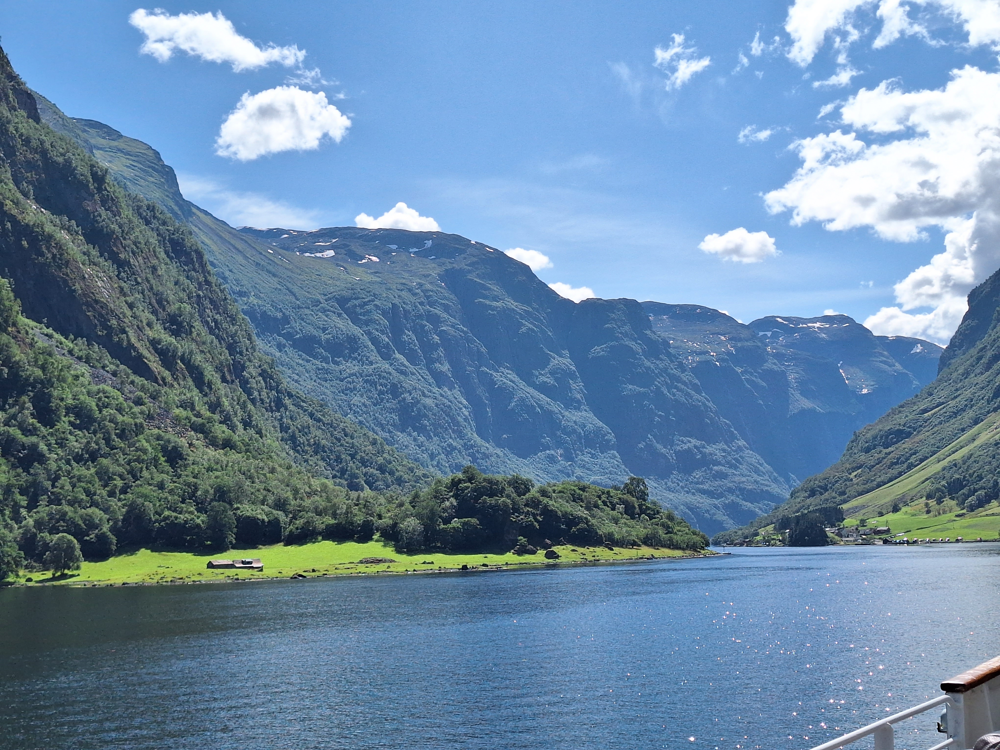
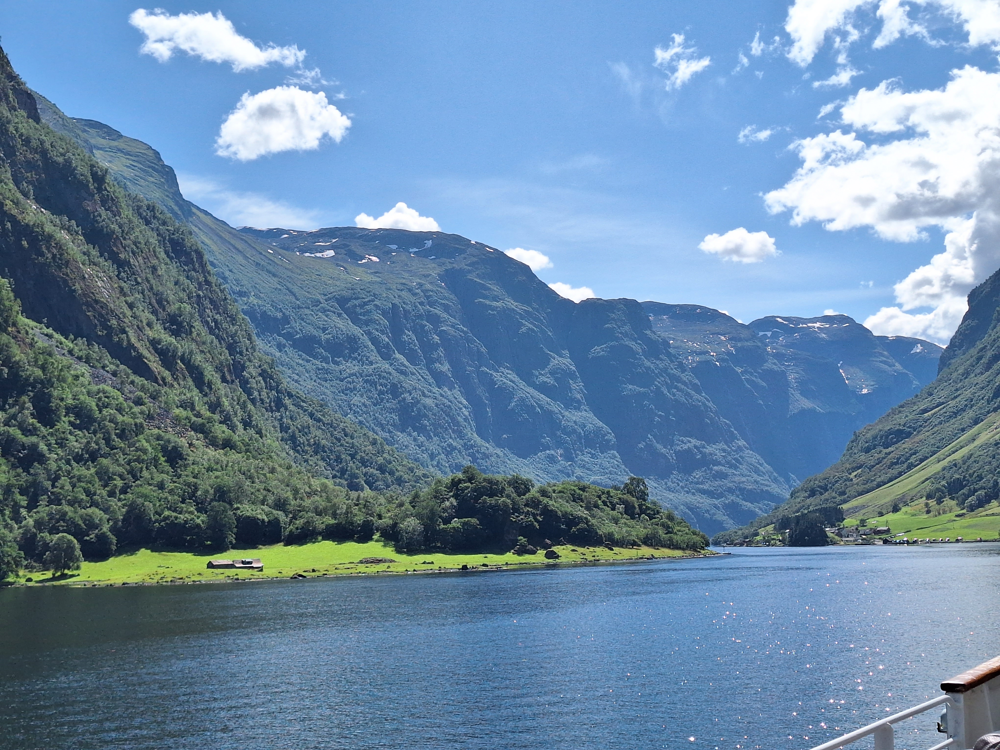
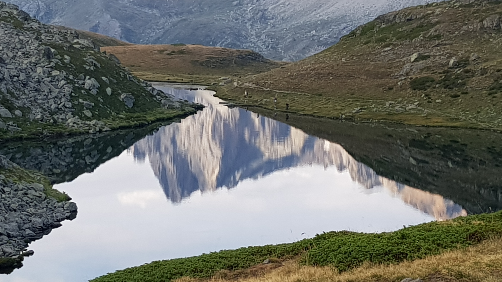
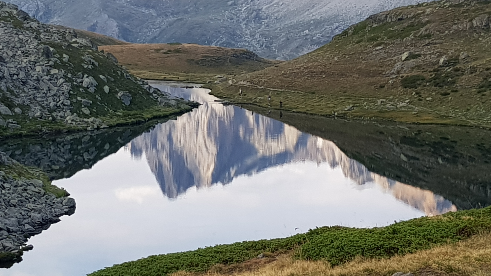
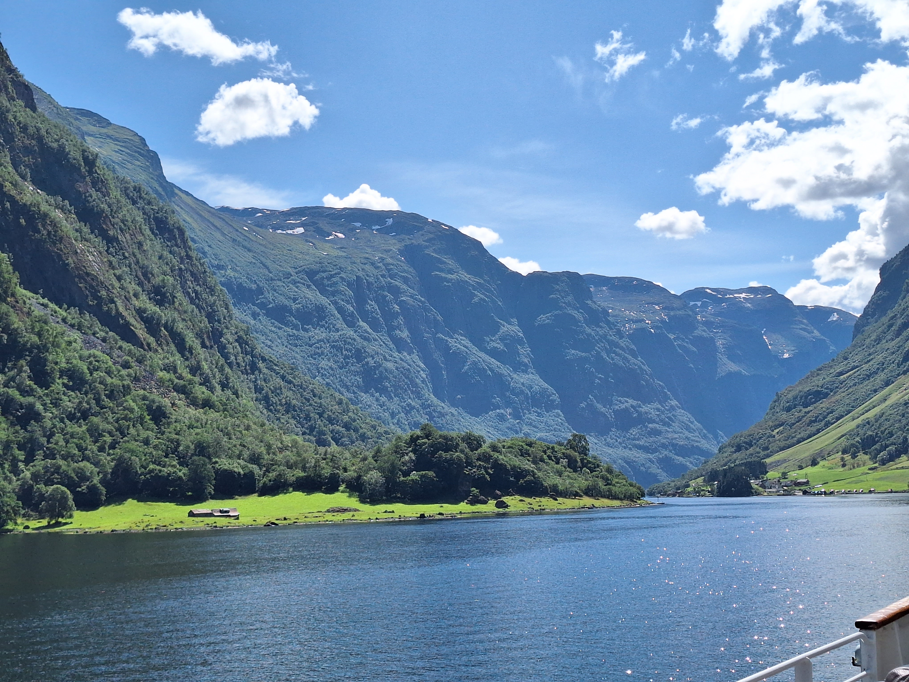
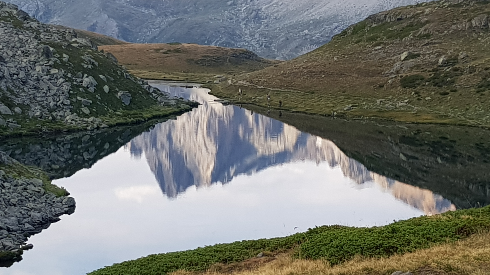

 

This is the self-contained one-file-version for a leaflet map. For a version with CSS and Javascript in different files see index.html. For a leaflet map without Javascript programming try Leasymap.
Find the source code on Github.
The one important thing is that the #map div needs a height to be visible.

